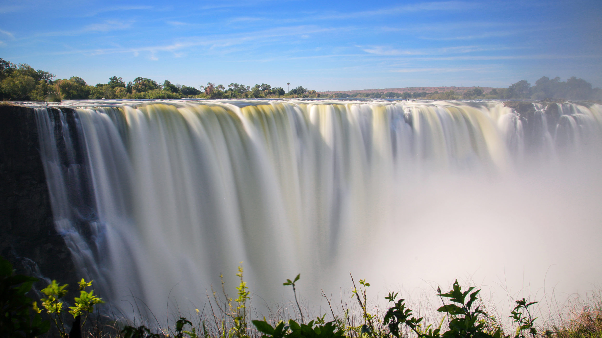

About Me
My name is Celine Mafigu.l was born and raised in Zimbabwe. l am currently working as an au-Pair for a wonderfull famailyand the children loves me. I enjoy learning new thing, right now l am learning how to knite wool jersey with a machine.
I love to learn and I am pursuing a Bachelors Degree in Software development.

Victoria Falls is also known as Mosi-oa-Tunya, "Thundering Smoke"; or Shungu Namutitima, "Boiling Water". lt is a waterfall on the Zambezi River, located on the border between Zambia and Zimbabwe. It is one of the world's largest waterfalls, with a width of 1,708 m (5,604 ft). The region around it is inhabited by several species of plants and animals.